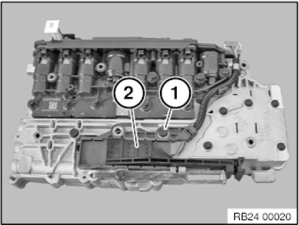
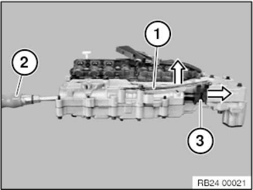
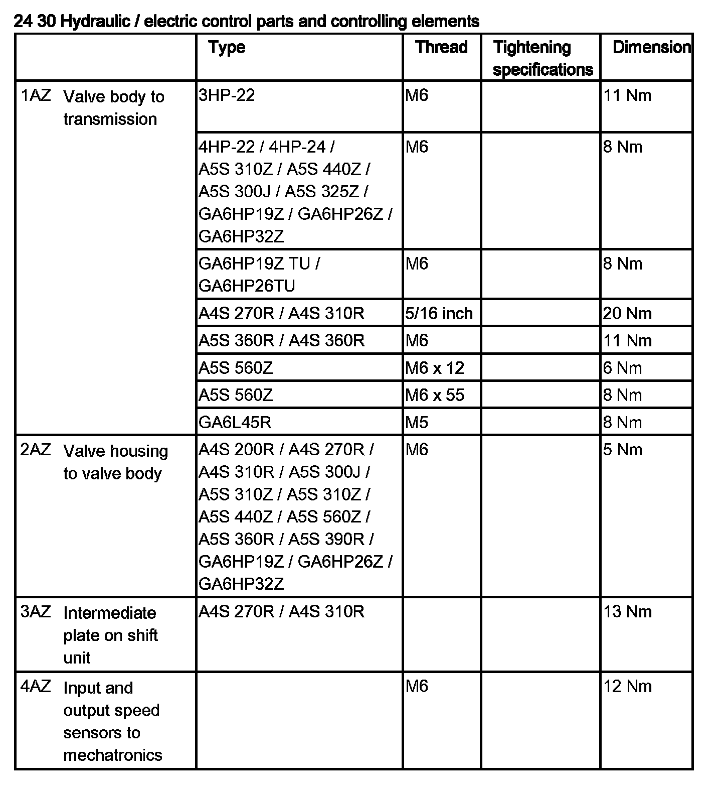
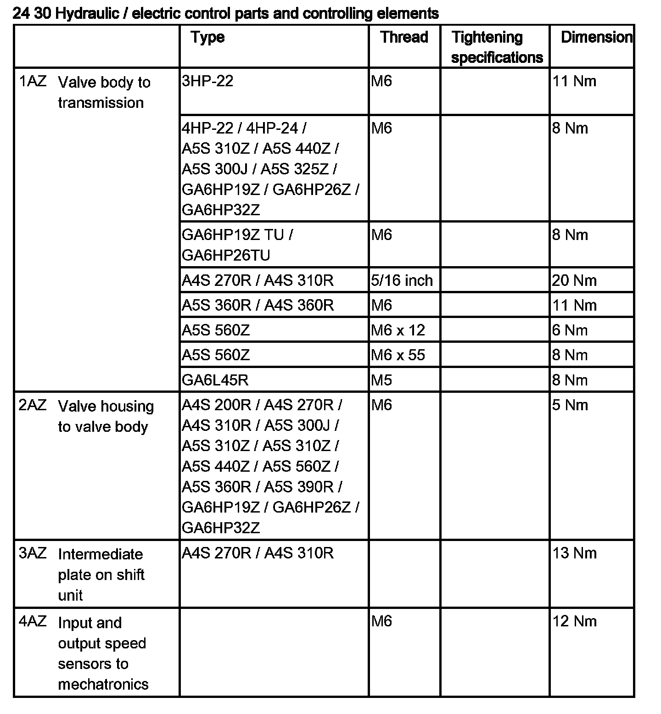
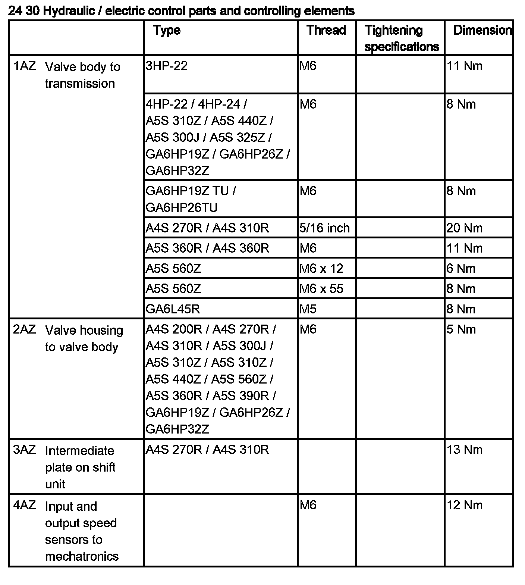
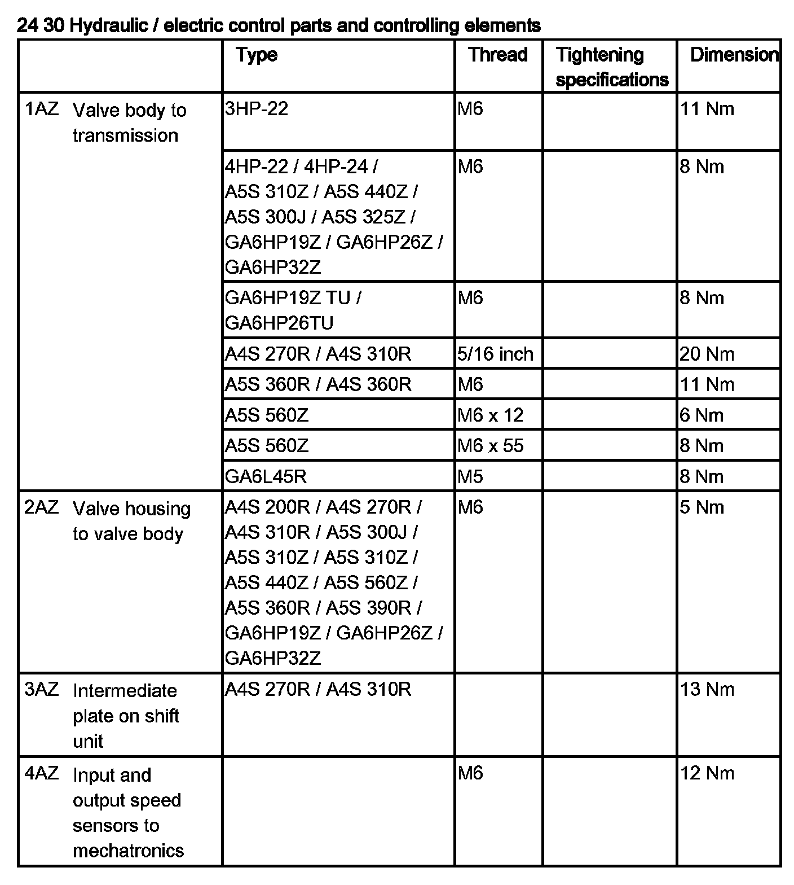

Shift Solenoid: Service and Repair
24 33 530 Replacing gear selector valve (GA6L45R)

IMPORTANT:
After completion of work, check gearbox oil level.
Use only approved gearbox oil.
Failure to comply with this instruction will result in serious damage to the transmission.

Necessary preliminary work:
- Remove mechatronics

Release screw (1).
Place gear position switch (2) to one side.
Tightening torque 24 30 1AZ.

Slightly press bracket (1) upwards.
Using suitable tool (2) push gear selector valve (3) out of the mechatronics system.




